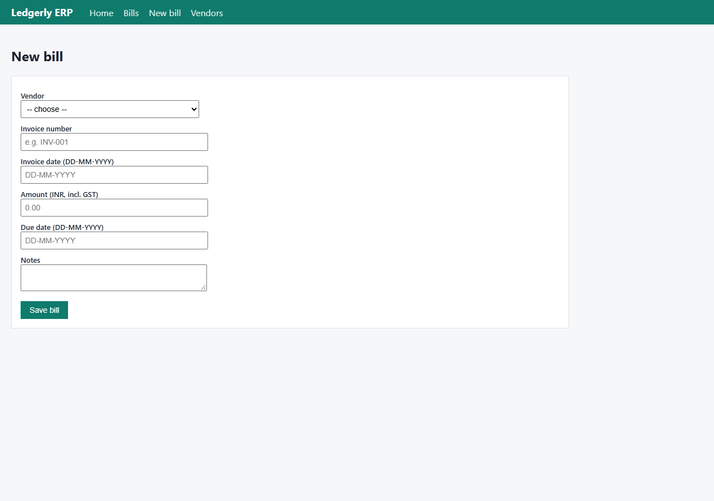
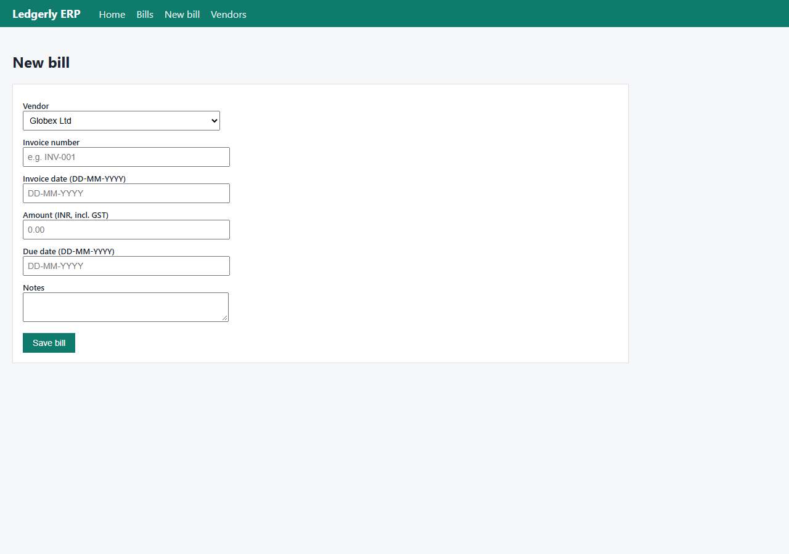
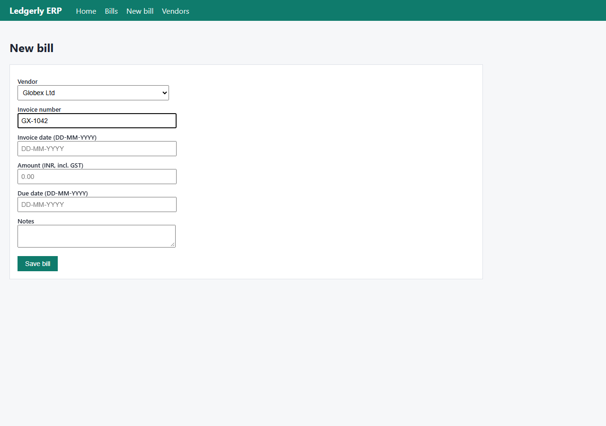
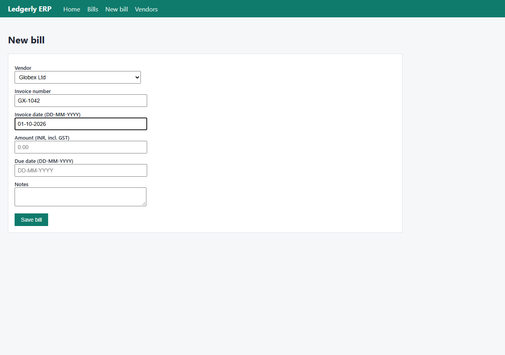
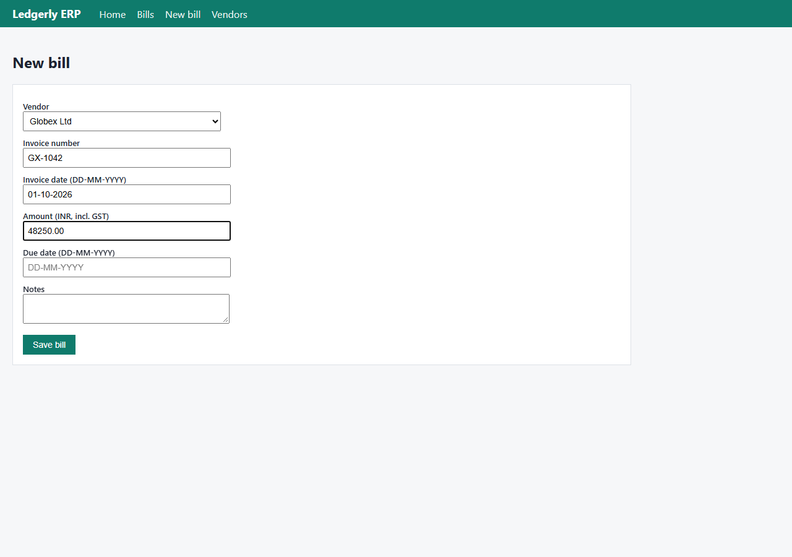
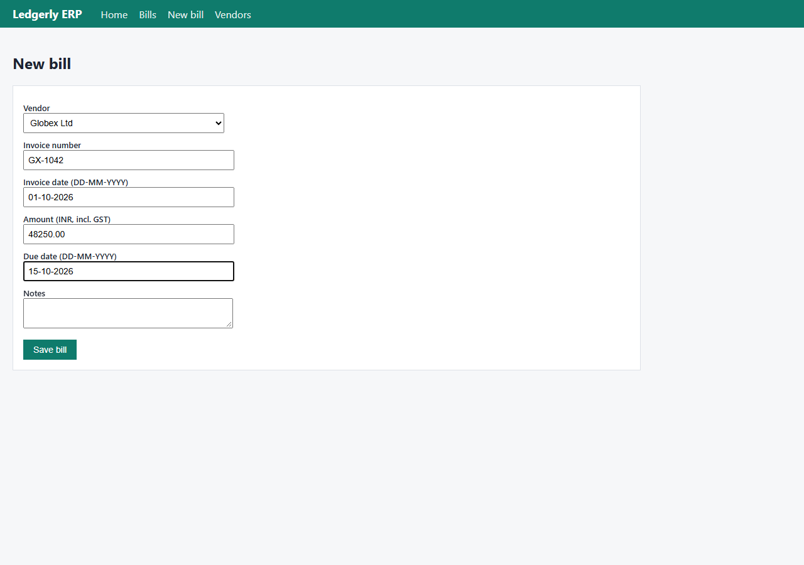
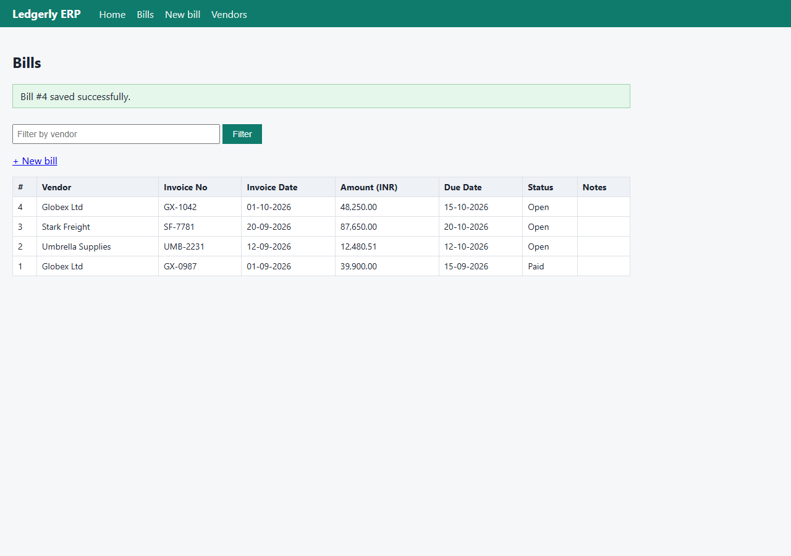
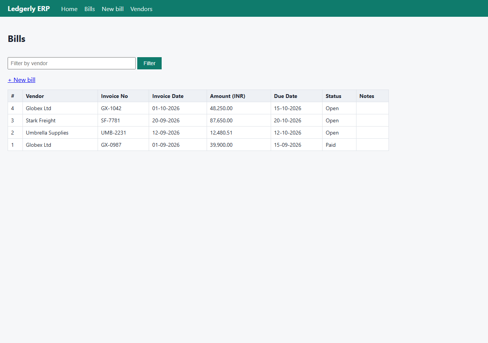

Task: Find the latest invoice from Globex, extract the amount and due date, enter it into our accounts system, and tell me once it is done.
VERIFIED status: success · 17 steps · 68.3s · $0.047 · 20 LLM calls (140 in / 150150 cached / 5491 out tokens)
Found the latest Globex invoice (GX-1042) in AcmeMail, extracted details from the PDF, and entered it into Ledgerly ERP as a new bill. Confirmed it appears in the bills list with correct values.
| Criterion | Verdict | Evidence observed by verifier |
|---|---|---|
| Ledgerly ERP bills list shows exactly one bill for vendor Globex Ltd with Invoice No = GX-1042, Invoice Date = 01-10-2026, Amount = 48,250.00 INR, Due Date = 15-10-2026 | pass | Live bills list at http://localhost:8000/erp/bills shows the complete list of 4 bills. Bill #4: 'Globex Ltd | GX-1042 | 01-10-2026 | 48,250.00 | 15-10-2026 | Open' — all five required fields match exactly. The only other Globex Ltd row is bill #1 'GX-0987 | 01-09-2026 | 39,900.00 | Paid', a different older invoice, so there is exactly one GX-1042 bill and no duplicate. Source PDF downloads/GX-1042.pdf confirms: 'Invoice No: GX-1042', 'Invoice Date: 01-10-2026', 'Payment Due: 15-10-2026', 'TOTAL PAYABLE INR 48,250.00' (GST-inclusive, per SOP). |
| Step | Button | Page | Values | Outcome |
|---|---|---|---|---|
| 11 | Save bill | http://localhost:8000/erp/bills/new | {"Vendor": "Globex Ltd", "Invoice number": "GX-1042", "Invoice date (DD-MM-YYYY)": "01-10-2026", "Amount (INR, incl. GST)": "48250.00", "Due date (DD-MM-YYYY)": "15-10-2026", "Notes": "September 2026 freight handling and warehouse storage services. Source: GX-1042.pdf received via AcmeMail from billing@globex.example."} | ok |
| 15 | Save bill | http://localhost:8000/erp/bills/new | {"Vendor": "Globex Ltd", "Invoice number": "GX-1042", "Invoice date (DD-MM-YYYY)": "01-10-2026", "Amount (INR, incl. GST)": "48250.00", "Due date (DD-MM-YYYY)": "15-10-2026", "Notes": ""} | ok |








thought Let me start by understanding the task: Find the latest invoice from Globex, extract the amount and due date, enter it into our accounts system, and tell me once done.
First, I should search company memory for SOPs and system directory to understand how to do this.thought I'll start by searching company memory for the relevant SOPs and system directory.tool_call {"tool": "search_memory", "input": {"query": "invoice processing SOP accounts payable vendor invoices"}, "step": 1}tool_call {"tool": "search_memory", "input": {"query": "system directory company systems URLs"}, "step": 1}thought Let me get the full SOP for accounts payable, and check if there's an approval limit mentioned. The memory search showed partial SOP. Let me search for more details like approval limits, and also start looking at AcmeMail for Globex invoices.
Key facts so far:
- Invoices arrive in AcmeMail as PDF attachments; PDF is source of truth.
- Latest invoice = most recent by invoice date.
- Revised invoictool_call {"tool": "update_plan", "input": {"steps": [{"description": "Find latest Globex invoice in AcmeMail (check for revised/superseding invoices)", "id": "1", "status": "doing"}, {"description": "Download and read invoice PDF; extract invoice number, date, total payable (incl GST), due date", "id": "2", "status": "todo"}, {"description": "Verify vendor identity (Globex Ltd, billing@globex.example) per tool_call {"tool": "search_memory", "input": {"query": "approval limit bills finance manager approval threshold"}, "step": 2}thought I have the SOPs. Key points:
- Vendor invoices arrive in AcmeMail as PDF attachments. PDF is source of truth.
- Latest invoice = most recent by invoice date.
- If a revised invoice supersedes an earlier one, enter the revised one and mention the superseded invoice number in bill notes.
- Vendor of record: Globex Ltd (NOT Globex Logistics). Official emails from billing@globex.example.
- Check duplithought I have the SOPs. Now let me open AcmeMail to find Globex invoices.tool_call {"tool": "open_url", "input": {"url": "http://localhost:8000/mail"}, "step": 3}thought I see an email from billing@globex.example with subject "Invoice GX-1042 for September services" received 01-10-2026. But I should search for "globex" to see all Globex emails, including on page 2, to make sure I find the latest invoice (and any revised invoices). Let me search for "globex" in the search box.thought I see a Globex invoice email on page 1. Let me search for all Globex emails to make sure I find the latest one (including any revised invoices on older pages).tool_call {"tool": "type_text", "input": {"element_id": 2, "text": "globex", "submit": true}, "step": 4}thought Two Globex invoices: GX-1042 (01-10-2026) and GX-0987 (01-09-2026). The latest is GX-1042. Both are from the official domain billing@globex.example. Let me open the GX-1042 email to get the PDF attachment.tool_call {"tool": "click", "input": {"element_id": 4}, "step": 5}thought The email is from the official domain. Now let me download/open the PDF attachment — it's the source of truth per the SOP.tool_call {"tool": "click", "input": {"element_id": 2}, "step": 6}thought The PDF downloaded. Let me read it to extract the invoice details.tool_call {"tool": "read_file", "input": {"path": "downloads/GX-1042.pdf"}, "step": 7}thought I have the invoice details from the PDF:
- Invoice No: GX-1042, Invoice Date: 01-10-2026, Due: 15-10-2026
- TOTAL PAYABLE: INR 48,250.00 (incl. GST) — below the INR 1,00,000 approval limit, so no Finance Manager approval needed.
Let me record these facts and check the Ledgerly bills list for duplicates.tool_call {"tool": "remember", "input": {"key": "Globex invoice GX-1042 details", "value": "Invoice No GX-1042, date 01-10-2026, due 15-10-2026, TOTAL PAYABLE INR 48,250.00 incl GST; from billing@globex.example (official domain)", "source": "downloads/GX-1042.pdf"}, "step": 8}tool_call {"tool": "open_url", "input": {"url": "http://localhost:8000/erp/bills"}, "step": 8}thought The bills list shows only the older GX-0987 (already entered and Paid). No duplicate of GX-1042 exists. The vendor of record "Globex Ltd" is confirmed. Now let me open the new bill form.tool_call {"tool": "update_plan", "input": {"steps": [{"description": "Find latest Globex invoice in AcmeMail (check for revised/superseding invoices)", "id": "1", "status": "done"}, {"description": "Download and read invoice PDF; extract invoice number, date, total payable (incl GST), due date", "id": "2", "status": "done"}, {"description": "Verify vendor identity (Globex Ltd, billing@globex.example) per vtool_call {"tool": "click", "input": {"element_id": 7}, "step": 9}thought Now I need to fill the form. The form has:
- Vendor select: choose "Globex Ltd"
- Invoice number: GX-1042
- Invoice date: 01-10-2026
- Amount: 48250.00
- Due date: 15-10-2026
- Notes: optional — I could note "September 2026 freight handling services; no superseded invoice". Not required.
These are dependent actions? Actually filling fields are independent of each other — I can do them in parallelthought The form is ready. Let me fill in all the fields from the invoice PDF.tool_call {"tool": "select_option", "input": {"element_id": 5, "option": "Globex Ltd"}, "step": 10}tool_call {"tool": "type_text", "input": {"element_id": 6, "text": "GX-1042"}, "step": 10}tool_call {"tool": "type_text", "input": {"element_id": 7, "text": "01-10-2026"}, "step": 10}tool_call {"tool": "type_text", "input": {"element_id": 8, "text": "48250.00"}, "step": 10}tool_call {"tool": "type_text", "input": {"element_id": 9, "text": "15-10-2026"}, "step": 10}tool_call {"tool": "type_text", "input": {"element_id": 10, "text": "September 2026 freight handling and warehouse storage services. Source: GX-1042.pdf received via AcmeMail from billing@globex.example."}, "step": 10}thought All fields are filled correctly:
- Vendor: Globex Ltd
- Invoice number: GX-1042
- Invoice date: 01-10-2026
- Amount: 48250.00
- Due date: 15-10-2026
- Notes: filled
Now click "Save bill". Amount is below INR 1,00,000, so no approval needed.thought All fields are filled correctly. Now I'll save the bill.tool_call {"tool": "click", "input": {"element_id": 11}, "step": 11}policy {"button": "Save bill", "app": "erp", "decision": "allow", "rule": null, "fields": {"Vendor": "Globex Ltd", "Invoice number": "GX-1042", "Invoice date (DD-MM-YYYY)": "01-10-2026", "Amount (INR, incl. GST)": "48250.00", "Due date (DD-MM-YYYY)": "15-10-2026", "Notes": "September 2026 freight handling and warehouse storage services. Source: GX-1042.pdf received via AcmeMail from billing@globex.examplthought The save returned "Saved!" but the bills list still shows only 3 bills (Stark Freight SF-7781, Umbrella UMB-2231, Globex GX-0987). The new bill GX-1042 is not visible in the list. The URL is /erp/bills?saved=0 — that "saved=0" parameter is suspicious. Maybe there's pagination, or maybe the filter is applied, or maybe saved=0 means it wasn't actually saved? The page message says "Saved!" though.
Wthought The page says "Saved!" but the new bill isn't visible in the list, and the URL shows `saved=0` which is ambiguous. Let me filter by Globex to verify whether the bill was actually created.tool_call {"tool": "type_text", "input": {"element_id": 5, "text": "Globex"}, "step": 12}tool_call {"tool": "click", "input": {"element_id": 6}, "step": 12}thought The "Saved!" message appeared but the GX-1042 bill is NOT in the list — and the URL showed `saved=0`, suggesting the save actually failed. Per my guidelines, I must not retry an identical action blindly; the system shows no duplicate was created, so re-entering is safe. Let me re-enter the bill carefully.tool_call {"tool": "open_url", "input": {"url": "http://localhost:8000/erp/bills/new"}, "step": 13}thought Let me fill the form again. This time I'll try entering the amount without the trailing zeros in case that caused an issue, but first let me fill everything the same way.tool_call {"tool": "select_option", "input": {"element_id": 5, "option": "Globex Ltd"}, "step": 14}tool_call {"tool": "type_text", "input": {"element_id": 6, "text": "GX-1042"}, "step": 14}tool_call {"tool": "type_text", "input": {"element_id": 7, "text": "01-10-2026"}, "step": 14}tool_call {"tool": "type_text", "input": {"element_id": 8, "text": "48250.00"}, "step": 14}tool_call {"tool": "type_text", "input": {"element_id": 9, "text": "15-10-2026"}, "step": 14}thought All fields are filled. Now let me save again.tool_call {"tool": "click", "input": {"element_id": 11, "retry_reason": "First save returned \"Saved!\" but the bill did not appear in the bills list (URL showed saved=0); confirmed no duplicate exists, so re-saving."}, "step": 15}policy {"button": "Save bill", "app": "erp", "decision": "allow", "rule": null, "fields": {"Vendor": "Globex Ltd", "Invoice number": "GX-1042", "Invoice date (DD-MM-YYYY)": "01-10-2026", "Amount (INR, incl. GST)": "48250.00", "Due date (DD-MM-YYYY)": "15-10-2026", "Notes": ""}}thought The bill saved successfully this time. Bill #4 now appears: Globex Ltd, GX-1042, 01-10-2026, 48,250.00, 15-10-2026, Open. Exactly one GX-1042 record exists — no duplicate. Let me update the plan and finish.tool_call {"tool": "update_plan", "input": {"steps": [{"description": "Find latest Globex invoice in AcmeMail (check for revised/superseding invoices)", "id": "1", "status": "done"}, {"description": "Download and read invoice PDF; extract invoice number, date, total payable (incl GST), due date", "id": "2", "status": "done"}, {"description": "Verify vendor identity (Globex Ltd, billing@globex.example) per vthought The task is complete. Let me finish with a claim for the success criterion.tool_call {"tool": "finish", "input": {"status": "success", "summary": "Found the latest Globex invoice (GX-1042) in AcmeMail, extracted details from the PDF, and entered it into Ledgerly ERP as a new bill. Confirmed it appears in the bills list with correct values.", "claims": [{"evidence": "Ledgerly ERP bills list shows exactly one bill #4: Vendor = Globex Ltd, Invoice No = GX-1042, Invoice Date = 01-10-2verifier {"status": "started", "criteria": ["Ledgerly ERP bills list shows exactly one bill for vendor Globex Ltd with Invoice No = GX-1042, Invoice Date = 01-10-2026, Amount = 48,250.00 INR, Due Date = 15-10-2026"]}tool_call {"tool": "verifier.search_memory", "input": {"query": "Ledgerly ERP bills accounts system"}}tool_call {"tool": "verifier.list_files", "input": {"directory": "downloads"}}tool_call {"tool": "verifier.open_url", "input": {"url": "http://localhost:8000/erp/bills"}}tool_call {"tool": "verifier.read_file", "input": {"path": "downloads/GX-1042.pdf"}}verifier {"status": "done", "passed": true, "verdicts": [{"evidence": "Live bills list at http://localhost:8000/erp/bills shows the complete list of 4 bills. Bill #4: 'Globex Ltd | GX-1042 | 01-10-2026 | 48,250.00 | 15-10-2026 | Open' \u2014 all five required fields match exactly. The only other Globex Ltd row is bill #1 'GX-0987 | 01-09-2026 | 39,900.00 | Paid', a different older invoice, so there is exacFull trace: trace.jsonl · result.json